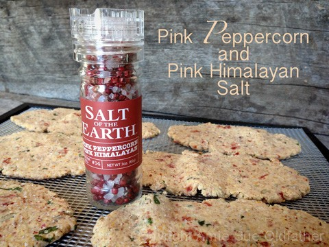

Crispy Sun-Dried Tomato and Basil Flatbread

~ raw, vegan, gluten-free ~
Sun-Dried Tomato and Basil is a combination of flavors that are popular in everything from salad dressing to vegetable dip. Let’s add raw crispy flatbreads to that list. These flatbreads are the new rage in our household.
This recipe is the third flavor combination that I have made in one week. When I ask Bob what he would like to eat, he always asks, “What do we have?” I start each time, saying, “Well, we have crostini and…..” Before another word can leave my mouth, “YES YES! That’s what I want!”
Sun-dried tomatoes are ripe tomatoes that lose most of their water content after spending a majority of their drying time in the sun. Note to self; don’t spend too much time in the sun. There are several ways to make your own, but for the most part, I purchase mine.
There are several reasons, one being that when I do have cherry tomatoes on hand, I can’t stop eating them, and secondly, I rarely have enough on hand to go through the process… which could easily be a result of the first reason. haha
In the dried state, tomatoes will keep their nutritional value. They are high in lycopene, antioxidants, and vitamin C and low in sodium, fat, and calories. If you purchase sun-dried tomatoes, aim for ones that are not packed in oil nor have been dried in sulfur dioxide.
Ingredients:
yields 4 cups = 18 flatbreads (1 scoop was 2.5 Tbsp)
Dry Ingredients:
Wet Ingredients:
- 1 large (2 cups diced) zucchini, peeled
- 2 Tbsp water
- 1 Tbsp cold-pressed olive oil
- 1/4 cup maple syrup
- 1 Tbsp coconut amino
- 2 Tbsp fresh lemon juice
Hand mix in:
- 2 cups packed, moist almond pulp
- 1/2 cup raw sunflower seeds, soaked
- 1/2 cup diced, sun-dried tomatoes, rehydrated
- 1 tsp dried basil or 1 1/2 Tbsp fresh
Preparation:
- Rehydrate the sun-dried tomatoes by covering them with enough warm water to cover them.
- Soak for at least 15 minutes.
- After soaking, drain the soak water and hand-squeeze the excess water out of them.
- In the food processor fitted with the “S” blade, place the almond flour, ground flax, coconut flour, minced onion, and salt.
- Pulse together until combined.
- Place the dry ingredients in a medium-sized bowl and set aside.
- In the same food processor, place the zucchini, water, olive oil, maple syrup, aminos, and lemon juice.
- Process till everything is well incorporated.
- Pour into the bowl with the dry ingredients. Mix.
- Add the almond pulp, sunflower seeds, sun-dried tomatoes, and basil. With your hands, mix everything well.
- To create the flatbreads, use about 2 1/2 Tbsp worth of dough.
- Roll into an oval shape and place it on the teflex sheet that comes with the dehydrator or on parchment paper. I do two at a time.
- Cover with another sheet and with a rolling pin, use even pressure to press them out to a flatbread shape.
- They should be reasonably thin, no more than 1/4″ thick.
- See the photos below on how to transfer the flatbread from the teflex to your hand, to the mesh sheet.
- Leave the flatbreads plain or sprinkle extra sunflower seeds and basil. After sprinkling them on, with the palm of your hand, lightly press them into the dough.
- Sprinkle coarse sea salt on top before dehydrating.
- Dehydrate at 145 degrees for 1 hour, then reduce to 115 (F) degrees for 6-10 hours or until dry.
- These should last several weeks in an airtight container. If they start to moisten a bit, return them to the dehydrator and dry until they firm back up.
Culinary Explanations:
- Why do I start the dehydrator at 145 degrees (F)? Click (here) to learn the reason behind this.
- Don’t own a dehydrator? Learn how to use your oven (here). I do, however honestly believe that it is a worthwhile investment. Click (here) to learn what I use.

I found that rolling two at a time was perfect, any more, and it’s just too complicated.

Cover the dough balls with another sheet of teflex or parchment paper and roll out
lightly with a rolling pin. You can use your hand too if you don’t own a rolling pin

Peel the top layer back, exposing the flatbreads.

Place your hand on top of one of the breads and turn it over into your palm.
As shown below. This may seem awkward, but you will get the hang of it.

Once the dough is resting in the palm of your hand, peel the paper off of it.

Hand cupping… this is my artistic side coming out. With the dough in your hand
cup your palm a little, creating an irregular shape.

Hold the shape in your hand and turn your hand over, placing the dough on the sheet.
The objective of this is to create what seems like air pockets and curling edges that
would appear in cooked flatbreads. This technique is entirely optional, but it takes
the raw flatbread to a new level of fun when all is said and done.


I choose not to put additional sunflower seeds and basil on top of all of my breads.
But I did give them a good sprinkling of this pink peppercorn and Himalayan salt mix.

I hope these pictures helped explain my technique.
© AmieSue.com